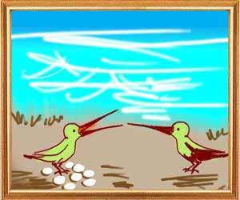
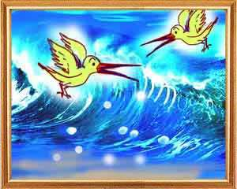

Once upon a time, a pair of pheasants lived close to the Sea. They spent their time happily singing and dancing on the branches of the trees by the Sea. One day the female pheasant told her husband that she was expecting their baby and he must look for a safe place to lay the eggs. The husband said, “My dear, this Seaside is enchanting and it is better you lay eggs here only.”
The wife said, “When it is full moon, the Sea tide can wash away even wild elephants. Let us go elsewhere.” Amused, the husband said, “What you say is true. But the Sea has no power to harm us. Haven't you heard that there is no fool who could stop the flight of a bird or a fool who would enter fire recklessly. Will anyone be brash enough to challenge Yama (the Lord of Death) to take his life if he can? You can lay your eggs here only.”
Listening to this dialogue, the Sea thought, “How vain is this bird which is as small as a worm! Let me drown these eggs and see what he can do.” After laying eggs, the female bird went in search of food. In her absence, the Sea sent a wave that sucked the eggs into the waters. The female returned to the nest and, not finding the eggs there, told the husband, "You are a fool. I told you that the waves would wash away the eggs. Those who do not heed the good words of a friend will perish like the turtle who fell off the stick.”
“What's that turtle and what is that stick?” asked the husband. Once upon a time a turtle called Kambugriva lived in a pond. He had two swans, Sankat and Vikat, as good friends. Every day they would meet on the rim of the pond and discuss legends of yore. They would disperse with sunset. That year there were no rains and the water in the pond began slowly disappearing.
Worried, the swans told the turtle, “Friend, What will happen to you? We are concerned.” “I appreciate your interest in me. There is trouble ahead. Please find a way out of this crisis. But it is important that we should not give in to despair. According to Manu, all good men should come to the rescue of friends and relatives in times of need. Look for a stick or a rope. I will hang on to it as both of you hold the two sides of the stick or rope and ferry me to safety.”
“We shall do as you say,” the swans said. “But you have to shut your mouth. Otherwise, you will crash to the ground.” On Kambugriva agreeing to the plan, the swans brought a stick and asked the turtle to hold it with his teeth. When everything was ready, the swans flew off with the turtle hanging from it. On the way people saw this sight and exclaimed, “see, how clever the birds are.” In trying to respond to the people, the turtle opened his mouth and fell to the ground and the people at once killed him.